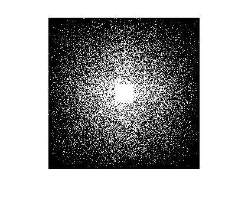
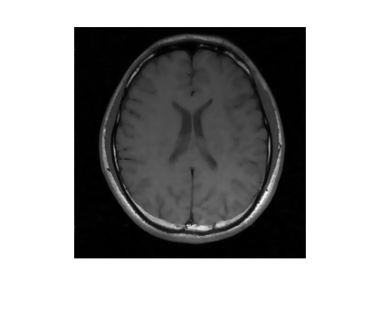
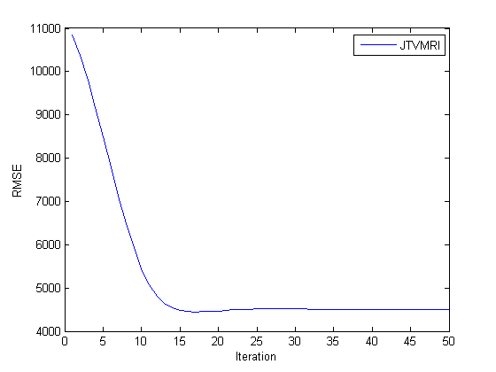
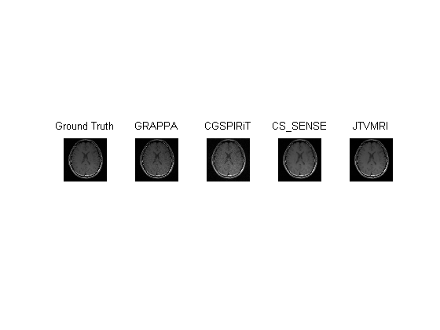

Contents
Initialization and Parameter Settings
clear all; close all;
db_pars.resize = [256, 256];
[data, fdata] = load_db(1);
alpha = 4e3;
beta = 4e-1;
maxIter=50;
[m n, T] = size(fdata); N = m*n;
Random Mask Generation
mask_pars.image_size = [m, n];
mask_pars.central_window = [30, 30];
mask_pars.d = 4;
mask = load_mask('random', mask_pars);
figure;imshow(mask,[]);

GRAPPA
kSize = [5,5]; CalibTyk = 0.01;
[CalibSize, dcomp] = getCalibSize(mask);
b = fdata.*repmat(mask,[1,1,T]);
fprintf('======== GRAPPA ==========\n');
kCalib = crop(b, [CalibSize,T]);
t0 = tic; res_grappa = GRAPPA(b,kCalib,kSize,CalibTyk); t=toc(t0);
im_grappa = ifft2c(res_grappa);
figure;imshow(abs(sos(im_grappa)),[]);
fprintf('RMSE: %.5f, time=%.2fs\n', RMSE(im_grappa, data), t);
======== GRAPPA ==========
reconstructiong coil 1
reconstructiong coil 2
reconstructiong coil 3
reconstructiong coil 4
reconstructiong coil 5
reconstructiong coil 6
reconstructiong coil 7
reconstructiong coil 8
RMSE: 5068.50289, time=169.86s
CGSPIRiT
fprintf('======== CGSPIRiT ==========\n');
nIterCG = 10; ReconTyk = 1e-5;
kCalib = crop(data,[CalibSize,T]);
kernel = zeros([kSize,T,T]);
[AtA, ~] = corrMatrix(kCalib,kSize);
for t=1:T
kernel(:,:,:,t) = calibrate(AtA,kSize,T,t,CalibTyk);
end
t0 = tic;
GOP = SPIRiT(kernel, 'fft',[m,n]);
[res_cg, RELRES,RESVEC,info] = cgSPIRiT(b,GOP,nIterCG,ReconTyk, b, data);
t = toc(t0);
im_cgspirit = ifft2c(res_cg);
figure;imshow(abs(sos(im_cgspirit)),[]);
fprintf('RMSE: %.5f, time=%.2fs\n', RMSE(im_cgspirit, data), t);
======== CGSPIRiT ==========
RMSE: 12520.00631, time=3.97s
CSSENSE
fprintf('======== CSSENSE ==========\n');
im_cssense = zeros([m, n, T]);
t0 = tic;
for t=1:T,
A = p2DFT(mask, [m n], 1, 2);
t_im = data(:, :, t);
input1.alpha=alpha*2;
input1.beta=beta*2;
input1.maxIter=maxIter;input1.num=1;
input1.mask=mask; input1.im_ori = t_im;
input1.data = A*t_im;
input1.im_dc=real(ifft2(t_im))*sqrt(m*n);
input1.Phi=Wavelet('Daubechies',4, 4);
fprintf('Processing coil %d...\n', t);
out=sparseMRICg(input1); out1=out;
im_cssense(:, :, t)=out.im_recover;
end
t = toc(t0);
figure;imshow(abs(sos(im_cssense)),[]);
fprintf('RMSE: %.5f, time=%.2fs\n', RMSE(im_cssense, data), t);
======== CSSENSE ==========
Processing coil 1...
Processing coil 2...
Processing coil 3...
Processing coil 4...
Processing coil 5...
Processing coil 6...
Processing coil 7...
Processing coil 8...
RMSE: 6819.97384, time=469.56s

JTV
A = {}; b = {};
for t=1:T
A{t} = p2DFT(mask, size(data(:,:,1)), 1, 2);
b{t} = A{t}*data(:,:,t);
im_dc(:,:,t) = A{t}'*b{t};
end
input.f=data; input.n1=m;input.n2=n;
input.alpha=alpha;
input.L=1;
input.no=maxIter;
fprintf('calling the function JTV.....\n');
t0 = tic;
out = FISTA_JTV(b, A, input); t = toc(t0);
im_jtv = out.y;
figure;imshow(abs(sos(im_jtv)),[]);
fprintf('RMSE: %.5f, time=%.2fs\n', RMSE(im_jtv, data), t);
calling the function JTV.....
RMSE: 4503.92199, time=53.92s
Visualization
figure;
plot(out.rmse);
legend('JTVMRI');
xlabel('Iteration');
ylabel('RMSE');
figure; hold on;
subplot(1,5,1); imshow(abs(sos(data)),[]); title('Ground Truth');
subplot(1,5,2); imshow(abs(sos(im_grappa)),[]); title('GRAPPA');
subplot(1,5,3); imshow(abs(sos(im_cgspirit)), []); title('CGSPIRiT');
subplot(1,5,4); imshow(abs(sos(im_cssense)),[]); title('CS\_SENSE');
subplot(1,5,5); imshow(abs(sos(im_jtv)),[]); title('JTVMRI');
 